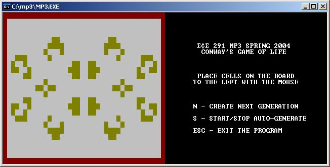

<%
title = "ECE 291 - MP3"
subtitle = "MP3"
%>
Machine Problem 3: Conway's Game of Life
| Assigned |
Thursday, 3/4/04 |
| Due Date |
Wednesday, 3/17/03 |
| Purpose |
Asyncrhonous I/O, Interrupts, Text Mode
Video |
| Points |
80 |
Introduction

Conway's Game of Life is not that crappy board game you probably played as a
child. It's a cellular automaton invented by Cambridge mathematician John
Conway. The rules of the game are simple:
- For a cell that is 'occupied' or 'populated':
- Each cell with one or no neighbors dies in the next generation because of
loneliness.
- Each cell with four or more neighbors dies in the next generation because
of overpopulation.
- Each cell with two or three neighbors survives in the next generation.
- For a cell that is 'empty' or 'unpopulated':
- Each cell with three neighbors becomes populated in the next generation .
In this MP, you'll create a version of Conway's Game of Life. You will
be obtaining user input through asynchronous I/O and writing interrupt handlers
to process the input. You'll also display the game board with text mode
video.
Problem Description
Program Variables
The game board is modeled as a 25 row by 40 column array. There are two
game boards: CurrentBoard contains the current generation and
NextBoard contains the next generation. There are two possible values
for the locations in the game board: a 0 corresponds to an empty cell, and a 1
corresponds to an occupied cell. The border rows and columns of
CurrentBoard should be ignored when
calculating the next generation.
The MPFlags variable contains the status flags that are
used in the MP. It is a waste of space to create separate variables for
each of the status flags; the values of the flags will always be either 0 or 1,
so we can use a bit to represent the flag instead of a byte. The following
bullets describe how each bit in MPFlags is used.
- Bit 0 - End Game
- Bit 1 - Calculate Next Generation
- Bit 2 - Auto-Calculate Next Generation
- Bit 3 - Left Mouse Button Status (High if Held Down)
You should familiarize yourself with the logical instructions so that you're
able to set, clear, or toggle one or more bits of a byte.
Text Mode Video
Section 11.1 of the lab manual discusses text mode video. In this MP,
you'll be writing directly to video memory. The lab manual has examples on
how to do this. Recall that the first page of
video memory begins at segment B800h. Also, the colors you'll be working with in the MP are defined
for you as constants, and the lookup table ColorTable has also been
provided for your convenience.
Double buffering is a technique used to eliminate screen flicker. If you've ever
played any old-school Nintendo games, you most likely seen the screen flicker
occasionally. With double buffering, you create a buffer equal to the size
of the video memory screen buffer (we'll call this buffer ScreenBuffer), draw the next frame to the temporary buffer,
then copy the entire temporary buffer to video memory when you're ready to
update the screen. This process allows for smooth transitions between
frames, which solves the flicker problem.
Asynchronous I/O
In previous MPs, we used the library's kbdin/kbdine functions to get
keyboard input. These functions continuously polled the keyboard until they received
input. In many cases, we want our programs to accept input from other devices
and/or execute other functions while waiting for user input. This is done by
writing our own interrupt service routines (ISRs). For this MP, we will be
obtaining user input from the keyboard and mouse asynchronously. We'll also be using the system timer to automatically calculate the next generation of the current game board every second.
MP3 Program Assignment
You will replace these
procedures from the LIBMP3 library by commenting out the statements calling the
library procedure and adding your code. Each procedure that you write should
match the output of the library code exactly. Each of the function calls and
their functionality is described below in the Subroutines section. The
best way to get a feel for the program is to run it to see how it is supposed
to operate. You can also edit the test file to see how various changes will
affect the program execution. The program can be run by typing mp3
at the command prompt.
Subroutines
This assignment has 14 subroutines. You will receive credit by replacing each
of these 14 subroutines listed below with your own code.
MP3Main
-
Installs/Removes ISRs and runs main game loop
-
Inputs: None
-
Outputs: None
-
Calls: InstallKeyboard, InstallMouse, InstallTimer,
UpdateBoard, NextGeneration, DrawScreen, RefreshScreen,
RemoveKeyboard, RemoveMouse, RemoveTimer
- The MP3Main
pseudocode is given below:
Install ISRs
While user does not want to exit the program
If the game board needs
to be updated, do so and clear the appropriate flag
If the next generation
needs to be updated, do so and clear the appropriate flag
Draw the screen to the
buffer and refresh video memory with the contents of the
buffer
Remove ISRs
- Points: 8
UpdateBoard
-
Updates the game board by adding/removing cells
-
Inputs: MouseXPos, MouseYPos, CurrentBoard
-
Outputs: CurrentBoard updated
-
Calls: None
-
Notes:
- If the cell at (row,col) = ([MouseYPos],[MouseXPos])
is empty, add a cell
- If the cell at (row,col) = ([MouseYPos],[MouseXPos])
is occupied, remove the cell
- Do not add/remove cells of the border rows and columns
- Points: 10
NextGeneration
-
Calculates the next generation of the current game board
-
Inputs: CurrentBoard, NextBoard
-
Outputs: CurrentBoard updated with next generation
-
Calls: None
-
Notes:
- Use the rules given in the introduction to calculate the
next generation
- Ignore the border rows and columns when calculating the
next generation
- Write your output to NextBoard - you cannot do an
in-place update on CurrentBoard!
- Copy NextBoard to CurrentBoard when you're
done calculating the next generation; use string
instructions for better performance
- Points: 12
DrawScreen
-
Draws the next screen frame to the screen buffer
-
Inputs: ScreenBuffer, Menu, CurrentBoard,
ColorTable
-
Outputs: ScreenBuffer contains the next screen frame
-
Calls: None
-
Notes:
- Copy the Menu to the ScreenBuffer first;
use string instructions for better performance
- Traverse through CurrentBoard to determine the
colors to draw at each location on the screen
- Use the ColorTable lookup table to easily draw
the colors to the buffer. Note that the values of the
border locations are 0s in the array, not 2s; you could
start out by setting your index to 2 and changing it if the
current location is within the border.
- Points: 15
RefreshScreen
-
Updates the screen by coping the screen buffer to video
memory
-
Inputs: ScreenBuffer
-
Outputs: Video memory updated with contents of
ScreenBuffer
-
Calls: None
-
Notes:
- The segment of the first page of text mode video memory
is 0B800h
- Use string instructions for better performance
- Points: 5
InstallKeyboard
-
Installs the keyboard ISR
-
Inputs: None
-
Outputs: OldKeyboardV
-
Calls: None
-
Notes:
- The keyboard uses interrupt number 9
- Read the current value of the ISR out of the interrupt
vector table and store to OldKeyboardV before updating the table with your keyboard
ISR
- You should read/write the interrupt vector table
directly; do not use int 21h subfunctions to do so!
- Points: 2
RemoveKeyboard
-
Removes the keyboard ISR
-
Inputs: OldKeyboardV
-
Outputs: None
-
Calls: None
-
Notes:
- The keyboard uses interrupt number 9
- Write the original value back to the interrupt vector
table
- You should write the interrupt vector table directly; do
not use int 21h subfunctions to do so!
- Points: 2
KeyboardISR
-
Obtains and processes keyboard input
-
Inputs: scancode waiting at port 60h
-
Outputs: MPFlags
-
Calls: None
-
Notes:
- Remember to set DS=CS
- The scancodes for the keys you'll be using in the MP are
defined as constants for you
- When the user presses the ESC key, set the "End Game"
flag
- When the user presses the N key, set the "Calculate Next
Generation" flag
- When the user presses the S key, toggle the
"Auto-Calculate Next Generation" flag
- Remember to ACK with the PIC on every keypress - the lab
manual contains the necessary code for this
- Points: 6
InstallMouse
-
Installs the mouse callback
-
Inputs: None
-
Outputs: None
-
Calls: int 33h
-
Notes:
- Use interrupt 33h, subfunction 000Ch to install the mouse callback; refer to the Interrupt lists on the References section of the 291 web site for detailed information
- The mouse callback should be triggered on mouse movement and left mouse button presses and releases
- Points: 2
RemoveMouse
-
Removes the mouse callback
-
Inputs: None
Outputs: None-
Calls: int 33h
-
Notes:
- Use interrupt 33h, subfunction 000Ch with all register values of 0 to remove the callback
- Points: 2
MouseCallback
-
Obtains and processes mouse input
-
Inputs: register values filled with mouse position and button status values
-
Outputs: MouseXPos, MouseYPos, MPFlags
-
Calls: None
-
Notes:
- Remember to set DS=CS
- The mouse coordinates are given in pixels, not screen coordinates; thus, you must divide the input X and Y values by 8 before storing them to the respective variables
- The BX register contains the status information for the mouse buttons: if bit 0 is set, the left mouse button is being held down
- Points: 6
InstallTimer
-
Installs the timer ISR
-
Inputs: None
-
Outputs: OldTimerV
-
Calls: None
-
Notes:
- The timer uses interrupt number 1Ch
- Read the current value of the ISR out of the interrupt
vector table and store to OldTimerV before updating the table with your timer
ISR
- You should read/write the interrupt vector table
directly; do not use int 21h subfunctions to do so!
- Points: 2
RemoveTimer
-
Removes the timer ISR
-
Inputs: OldTimerV
-
Outputs: None
-
Calls: None
-
Notes:
- The timer uses interrupt number 1Ch
- Write the original value back to the interrupt vector
table
- You should write the interrupt vector table directly; do
not use int 21h subfunctions to do so!
- Points: 2
TimerISR
-
Processes system timer ticks
-
Inputs: TimerTicks, MPFlags
-
Outputs: TimerTicks, MPFlags
-
Calls: None
-
Notes:
- Remember to set DS=CS
- If the "Auto-Calculate Next Generation" flag is set, set the "Calculate Next Generation" flag every second (18 timer ticks); otherwise, reset TimerTicks to zero
- Points: 6
Hints
-
The LIBMP3 file contains executable library functions for each of the routines
that you need to implement. This allows you to run the program and understand
how it works before you implement it. You can test your program with any
combinations of your own code and library functions. You will only receive
credit, however, for the routines that you implement yourself.
-
When debugging your code in TD, you will find it helpful to use the memory
window to show you the memory location of the file and strings. You can also
use the watch window to keep track of variables in your code.
-
Do not assume that the file starts at memory location 0.
-
You may define new variables as needed.
-
Be very careful if you call another procedure not to destroy registers that the
calling procedure uses.
-
START EARLY!
There are a total of 14 functions you have to write, including the main
function. You will be writing the main function in this MP, and points
will be awarded accordingly to how you separate your functions.
-
You need to preserve register values in all of the procedures
you write. To do this, push all the registers you use in the procedure at
the beginning of the procedure. Then, pop them all in reverse order at
the end of the procedure (right before you return).
-
You need to create function headers for each of the functions you write.
Function headers should include the name of the function, the list of inputs to
the function, the list of the outputs, and any functions that the function
calls. You will lose points if you do not do this.
-
Monitor the webboard for
clarifications and help.
Procedure
-
You will begin this MP with the following files:
-
MP3.ASM: Program Framework
-
Makefile: Specifies how and when programs are assembled and
linked.
-
LIBMP3.LIB: Library functions for MP3
-
LIB291.LIB: General-purpose library functions
-
You may copy these files from the network drive to your home directory with the
following command:
xcopy /s V:\ece291\mp3 W:\mp3
or download the files from this server as mp3.zip
-
Add your code to MP3.ASM.
-
Assemble and link your program by typing make. This command
reads the Makefile then invokes NASM and TLINK to build an executable program.
-
Use TD debugger to find and correct program errors.
Final Steps
-
Demonstrate your MP3.EXE to a TA or to the instructor. The TA or
instructor will verify that your program produces the correct output.
-
Be prepared to answer questions about any aspect of the operation of your
program. The TAs will not accept an MP if you cannot fully explain the
operation of your code and details of your implementation. Delayed MPs will be
subject to late penalties as described in the course syllabus (10%/day).
-
The TA will handin your MP online.
mp3.asm (program framework)